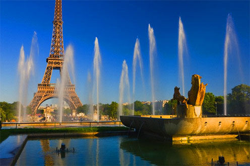
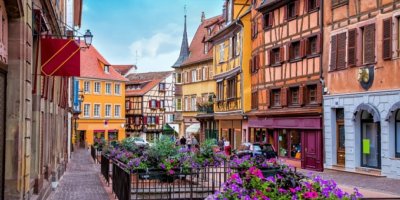

Национальный колорит Франции от турифирмы Владивотоска!
Чтобы полноценно насладиться национальным колоритом, необходимо посетить даже самые отдаленные уголочки этой удивительной страны. Поэтому для Вас предлагается тур, который познакмит Вас с провинциями Франции, каждая из которых отличается не только достопримечательностями, но особенностями кухни, традициями и даже языком! В туре предусмотрено посещение таких провинций, как Ницца, Авиньон, Бордо, Сен-Эмильон, Тулуза, Марсель. В рамках тура будет проведено 5 экскурсий, однако можно приобрести за дополнительную плату еще 4.
Программа тура
Тур расчитан на 10 дней, в стоимость тура включены основные экскурсии, авиаперелет, трансферы,полноценное трехразовое питание, медицинская страховка.
Переезд из города в город осуществляется на автобусе. Размещение а отелях, в центре городов. Помимо экскурсий будет предоставляться свободное время для прогулок. Для удобства будут предоставляться русско-французские карты профинци, стоимость которых входит стоимость тура.
Стоимость тура - от 16 500 рублей.